Delhi's fine-particle pollution (PM2.5) averaged 92 µg/m³ over the 332 days with data in the 12 months to October 2026, at government monitors in and around the city. India's standard for a year is 40. The pollution is there in every season. In December and January, after the main rice-residue burning season, it is about as high as in the burning weeks. Each October and November, crop fires burn in Punjab and Haryana, to the north-west of the city. In the available late-October and early-November records, Delhi's PM2.5 was higher in the groups of days with some or many fire detections upwind than in the group with few. The size of the difference varied by period and by how the data were selected. This report cannot say what percentage of Delhi's pollution comes from the fires.
92µg/m³ average PM2.5 in Delhi on the 332 days with data, November 2025–October 2026; India's annual standard is 40
179 of 332of those days above India's 24-hour standard of 60 µg/m³
38µg/m³ average in the monsoon months, June–September 2026, the only part of the year close to the annual standard
167–192µg/m³ average in December–January, after the main burning season, in the 3 seasons with enough data
Check this report. Every number here is in data.json, with its source, period, place, units and how it was calculated. Fire counts are NASA satellite heat detections, not confirmed fires and not burnt area. The comparisons of days below are associations. They are not a measurement of where Delhi's particles come from.
Polluted in every season
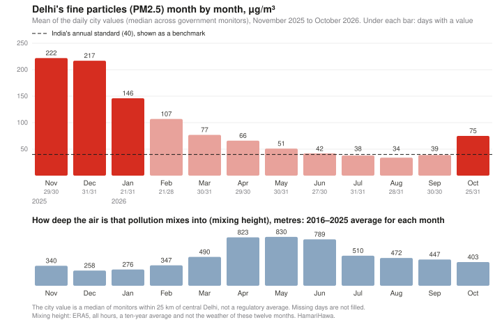
We used the readings of every government reference monitor within 25 km of central Delhi, as republished by OpenAQ [1]: stations run by the Delhi Pollution Control Committee, the India Meteorological Department, the Central Pollution Control Board and the pollution boards of neighbouring Uttar Pradesh and Haryana. Over the past year a typical day had 44 of them reporting. For each day we took the median across stations, and for each month the average of those daily values.
The monthly average was 222 µg/m³ in November 2025 and 217 in December. It was lowest in the monsoon: 38 in July 2026, 34 in August and 39 in September. India's national standards for PM2.5 are 60 µg/m³ over 24 hours and 40 over a year [2]. The World Health Organization's guideline values are 15 and 5 [3].
Of the 365 days from November 2025 to October 2026, 332 have a city value. Their average was 92, which is 2.3 times the annual standard. It is not an official annual average, and the missing days are not spread evenly: January has 21 of 31 days, February 21 of 28 and October 25 of 31. On 179 of the 332 days the city value was above 60, and on 329 it was above the WHO's 24-hour value of 15.
The 92 is a figure for the whole year, burning weeks included. It is not Delhi's level without fires. From February to September 2026 the average was 55 (226 days). Those months include the wheat harvest of April and May, when crop residue is also burnt [14]. This report does not examine it. Only in the four monsoon months, June to September, was the average close to the annual standard, at 38.
India's environment ministry lists the sources behind the region's pollution as vehicles, industry, construction and road dust, biomass burning and waste burning, among others. It says stubble burning and firecrackers add to them at times, and that paddy stubble burning affects the region's air particularly in October and November [13]. This report does not measure any of these sources.
December and January are about as polluted as the burning weeks. By December the main rice-residue burning season is over. Only three seasons have enough days of data in both periods to compare.
Delhi's average PM2.5, µg/m³, from 15 October to 30 November and in the two months after. Seasons with at least 25 and 30 days of data.
Season
15 Oct–30 Nov
Days
Dec–Jan
Days
2019–20
157
30
192
47
2021–22
188
45
167
30
2025–26
197
45
189
52
Delhi averaged 167 to 192 µg/m³ in December–January in these seasons. The table does not show what October and November would be without fires. Winter is colder and the air mixes less, so its pollution has its own causes.
What changes in October and November
The air mixes less. Pollution spreads upward into a layer of air whose depth changes with the season. Over central Delhi that layer averaged 823 m in April and 830 m in May, across all hours of the day, in the ERA5 weather reanalysis for 2016–2025 [4]. It averaged 403 m in October, 340 m in November and 258 m in December. At night, from October to December, it averaged 54 to 66 m. The same emissions go into much less air. These are ten-year averages from a weather model, not measurements for 2025–26.
The wind turns to come from the north-west. In the monsoon months, the wind 100 m above Delhi blows from the west-to-north quarter 17% to 34% of the time. In October that is 51%, in November 61% and in December 72%. That is the direction of Haryana and Punjab. It is also the usual winter wind of north India, so a north-west wind on a given day is not evidence of smoke.
The fields burn. After the rice harvest, many farmers in Punjab and Haryana burn crop residue to clear fields for wheat. NASA's MODIS satellite instruments [5] recorded between 10,965 and 19,178 fire detections in the two states in each October–November from 2016 to 2021. Most detections are far from Delhi. In each year from 2016 to 2025, the median Punjab detection was 297 to 308 km from the city centre and the median Haryana detection 149 to 185 km. Only 1.1% of the detections on the Indian side of our study area were within 100 km of Delhi.
Fires upwind and Delhi's air
What we compared. Smoke reaches Delhi only if the wind carries it there. So for each day from 15 October to 30 November we traced the air arriving over central Delhi back 48 hours along the wind, four times a day. We then counted the MODIS fire detections within 25 km of that path that were recorded between 24 hours before the air passed and 3 hours after. We call this count the estimated upstream fire-detection index. It is a rough indicator. It does not show that the air crossed a burning field, and it misses fires the satellites did not see.
Of the detections counted this way, 83% were in Indian Punjab, 11% in Haryana and 5% in Pakistan. There are 161 days with both an index and a Delhi value. Most are from three seasons: 30 days in 2019, 45 in 2021 and 45 in 2025. There are 19 in 2018, 14 in 2026 and 8 in 2016, 2017 and 2020 together. We divided the days into thirds by the index: few detections (3 or fewer), some, and many (more than 82).
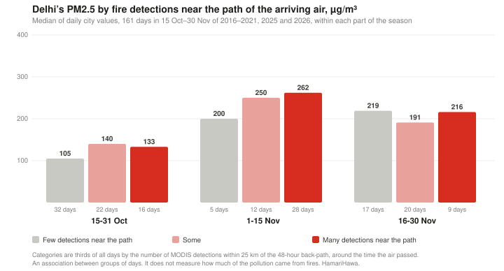
In the second half of October, Delhi's median PM2.5 was 105 µg/m³ on days in the few category, 140 on days in the some category and 133 on days in the many category. From 1 to 15 November it was 200, 250 and 262, though only 5 days in that fortnight were in the few category. From 16 to 30 November there is no such pattern: 219, 191 and 216.
So in late October and early November the some and many groups were both above the few group. It is not a steady step: in late October the many group was below the some group.
A check on the older data. The older records can be read on two hourly grids (see How we did this). We used one. The other gives more days: 238 instead of 161. For this larger sample we recalculated the thirds: few means 6 or fewer detections and many means more than 104. Keeping the original boundaries gives the same qualitative conclusion. With the recalculated thirds, the three groups are 105, 153 and 185 in late October and 236, 238 and 286 in early November, and late November again shows no pattern (189, 171 and 172). On this grid the many group is the highest in both periods, and in early November the few and some groups are about equal. On either grid the many group is above the few group in late October and early November. The sizes of the gaps change.
A comparison with winter days. October and November are also when the air over Delhi mixes less, so the pattern above could be partly weather. As a rough check, we paired each day of the peak burning weeks, 25 October to 20 November, with December–January days of the same season that had similar ventilation (mixing height multiplied by wind speed). This matches one weather measure only. It does not match temperature, humidity, rain or wind direction. The winter days are not Delhi without fires.
Only 57 days can be paired this way: 8 in 2019, 24 in 2021 and 25 in 2025. They averaged 219 µg/m³, and their paired winter days averaged 161.
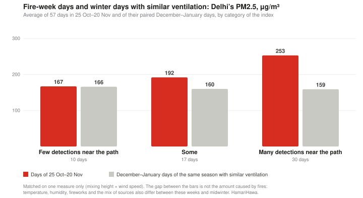
On the 10 days in the few category, Delhi averaged 167, against 166 on the paired winter days. On the 17 days in the some category it averaged 192, against 160. On the 30 days in the many category it averaged 253, against 159: 94 higher.
The seasons are uneven. The 10 few-category days come from 2019 and 2025 only; 2021 has none. In 2021 the 18 many-category days were 87 above their paired winter days and the other days were 20 below. In 2025 the 11 many-category days were 89 above and the others 15 above. In 2019 only 1 of the 8 days was in the many category.
These differences from winter depend on which data are used. On the other hourly grid there are 81 paired days in 4 seasons. The few-category days are then 33 above their paired winter days, not 1, the some-category days 65 above and the many-category days 108 above. The order of the three groups holds. The numbers do not.
Why we give no percentage. These comparisons do not establish the percentage of Delhi's pollution that comes from crop fires. Days with few detections may still contain smoke, the groups differ by year and in other conditions, and winter days matched on one ventilation measure are not an equivalent no-fire baseline. We therefore report the concentrations we observed and how they are associated.
A published estimate. India's SAFAR forecasting system provided daily model estimates of crop-fire smoke's share of Delhi's PM2.5 for the 2021 season. The Centre for Science and Environment analysed them for 52 days from 10 October to 30 November 2021 [6]. The daily share ranged from 1% to 48%, with its peak on 7 November 2021, and was above 40% on 2 days. That is a model's estimate for one season. We have not checked it, and our comparison does not test it.
Two other checks were inconclusive. We looked at carbon monoxide at Delhi's monitors and at satellite readings of haze over the city. Neither separated the many-category days from the rest. The carbon monoxide data are usable only for 2025 and 2026, and haze seen from space includes everything in the air column. These checks neither support nor contradict the pattern above. Both are in the data file.
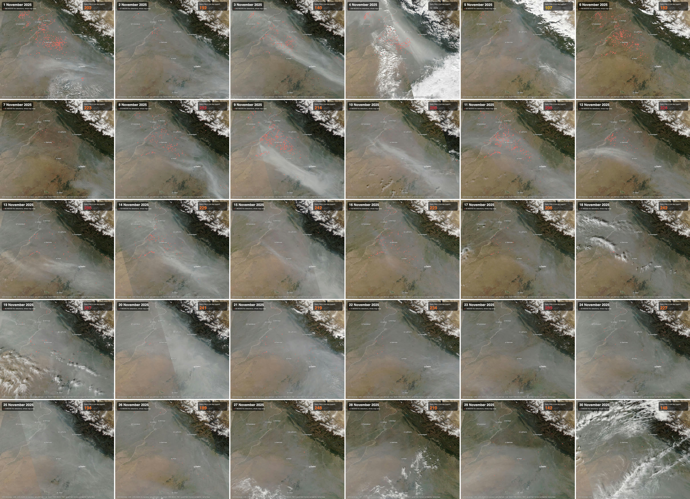
Each day of November 2025 from the NOAA-20 satellite, early afternoon, with Delhi's PM2.5 for the day. Red dots and the number on each image are that day's MODIS detections in the whole map area, both countries, day and night passes together; they are not the Punjab and Haryana count. From 21 to 30 November the images show 36 detections or fewer a day (16 or fewer in Punjab and Haryana), and Delhi's values are between 142 and 269. Watch as an animation. Images: NASA Worldview/GIBS [11].
Fire counts have fallen. Burning may have fallen less
MODIS recorded 19,178 detections in Punjab and Haryana in October–November 2021 and 3,314 in the same months of 2025. The VIIRS instrument on the NOAA-20 satellite recorded 55,868 between 1 October and 10 November 2021 and 3,839 in the same weeks of 2025 [7]. This year, to 10 November, MODIS has recorded 4,466 in early, unreviewed data.
These counts do not measure how much was burnt, and the two instruments agreeing does not settle it. These instruments sample fires at particular times of day. Changes in burning time and in satellite orbits mean that the same fraction of fires is not observed every year.
Burning has moved later in the day. A 2026 study by Hiren Jethva, using a geostationary satellite that observes through the afternoon, found that peak burning in the region moved from about 1–2 pm to 4–5 pm. Over Punjab, the hotspots that satellite detected were 49% fewer in 2024 than in 2021 and 45% more in 2025 than in 2024 [8]. Its pixels are about 4 km wide. These are detected hotspots, not a count of every field fire.
Burnt area fell less than fire counts. The research group iFOREST reports that more than 90% of large farm fires in Punjab in 2024 and 2025 were detected after 3 pm, against 3% in 2021. It reports that Punjab's burnt area fell from 31,447 km² in 2022 to about 20,000 km² in 2025, a fall of 37%, while satellite fire counts fell 92% from 2021 [9]. The two falls are measured from different years, so they are not a like-for-like pair.
The MODIS satellites have drifted. NASA says the orbits of Terra and Aqua have drifted, changing the time of day they pass and widening gaps between their scans, with significant effects from late 2024 [10]. In our data, Terra's detections in the two states fell from 1,725 in 2021 to 37 in 2025, and Aqua's from 17,453 to 3,277. The study above reports that Aqua's average pass over the region moved from 1:44 pm in 2021 to 3:12 pm in 2025 [8].
We have not independently reproduced the two studies' analyses. Because of these three things, we do not use the yearly counts to say how much burning has fallen, and we do not infer a trend or a cause from year-to-year comparisons of Delhi's air. Delhi's November average was 241 µg/m³ in 2021 and 222 in 2025, with 29 days of data in 2021 and 29 in 2025. Weather differs between years, and two Novembers cannot show a trend.
What this report can't tell you
What share of Delhi's pollution comes from crop fires. A credible percentage requires a validated attribution method, such as chemical analysis of the particles or an air-quality model checked against measurements. These comparisons do not establish one.
What Delhi's air would be without the fires. Neither the yearly average nor the winter level is that.
Where the air really went. Our paths follow the ERA5 wind 100 m above the ground. They ignore vertical motion and the spreading of smoke, and they stop at 48 hours. We did not compare them with an established tool such as HYSPLIT.
How much was really burnt. Satellite detections miss fires under cloud or smoke and fires lit outside the times the satellites pass. That affects the yearly counts and the index for each day. The extent of this bias varies between years and instruments.
Fireworks. Diwali falls in or close to the burning weeks, and fireworks are let off on other days too. We cannot separate them from fire smoke.
How much the choice of older data matters. On both hourly grids the many group is above the few group in late October and early November. The sizes of the differences, and the differences from winter, change with the grid.
Most years. Our Delhi record has no eligible day from 17 October 2022 to 18 February 2025, and few in 2016, 2017, 2018 and 2020. The comparison rests mainly on 2019, 2021 and 2025. We did not fill the gaps from another source.
Whether the monitors are right. We used the official readings as republished and did not check any station against another instrument. The set of stations changed over the years: a typical November day had 7 stations in 2017, 30 in 2019, 37 in 2021 and 45 in 2025.
How we did this
PM2.5. OpenAQ records for the PM2.5 sensors of government monitors within 25 km of 28.61°N 77.21°E, retrieved on 11 November 2026. From 2025 we used OpenAQ's daily records. For 1 October to 31 January of the seasons 2016–17 to 2022–23 we used its hourly records, because the daily counts for those years can include overlapping hourly aggregates. We selected one consistent grid of non-overlapping hourly aggregates, those ending on the hour in India time, and required at least 18 valid aggregates on that grid. This conservative restriction excludes some available offset-hour observations. From 2025 a station-day needs at least 18 of its 24 hours. In both, its average must be above 0 and no higher than 1,500 µg/m³. The city value is the median across stations, on days with at least five. That gives 822 days: 239 from the hourly records and 583 from 2025 onward. Monthly and seasonal figures are averages of the daily values. On the other grid, of aggregates ending on the half hour, the historical records give 424 days instead of 239. That grid shifts the older days by half an hour, so we used it only as a check.
Fires. NASA FIRMS MODIS detections (Terra and Aqua), 1 October to 30 November, standard product to 2025 and near-real-time data for 2026 (to 10 November), confidence 30 or more, presumed vegetation fires, in the area 73.0–79.5°E, 27.0–32.6°N. Each detection keeps its time of acquisition in UTC and is dated in India time. It is assigned to a country and an Indian state by boundary polygons [12].
Weather. ERA5 hourly mixing height and wind at the grid point nearest central Delhi, from the Open-Meteo archive, in India time. Daily ventilation is the mixing height multiplied by the 100 m wind speed, averaged over the same calendar day as the PM2.5 value.
Upstream fire-detection index. ERA5 100 m wind on a half-degree grid over 27.5–33°N, 72.5–78.5°E, inside a one-degree grid over 24–35°N, 69–83°E. From central Delhi at 03:00, 09:00, 15:00 and 21:00 India time, each path steps back 48 hours in 15-minute steps. A detection counts if it is within 25 km of an hourly point on a path and was acquired from 24 hours before to 3 hours after the air was at that point. The day's index is the number of distinct detections over the four paths. A day is used only if no path stopped for lack of wind data; 157 of the 161 days have four full 48-hour paths, and on the rest a path left the wind grid early. The wind data end on 5 November 2026. The last day with both an index and a Delhi value is 2 November 2026.
Winter comparison. Each day from 25 October to 20 November is paired with up to five December–January days of the same season (at least three) whose ventilation is within a factor of 1.25 of its own. The 57 days use 93 different winter days, 64 of them more than once. Every pair is listed with the data.
The data behind every chart and table, and the scripts that make them, are in the site's repository under scripts/reports/delhi-smog-fires/.
Sources
OpenAQ, API v3, hourly and daily records for locations within 25 km of central Delhi, originally from the Central Pollution Control Board's monitoring network. openaq.org
Government of India, Press Information Bureau, release on the National Ambient Air Quality Standards (2009). pib.gov.in
World Health Organization, WHO global air quality guidelines, 2021. who.int
ERA5 reanalysis (Copernicus Climate Change Service / ECMWF), through the Open-Meteo historical weather API. open-meteo.com
Centre for Science and Environment, "CSE releases analysis of winter air pollution trends for Delhi-NCR", 30 March 2022 (using SAFAR's daily estimates). cseindia.org
HamariHawa daily fire summaries, from NASA FIRMS VIIRS and MODIS data. hamarihawa.org/data
Hiren Jethva, "Timing the Flames: Geostationary Satellite Detection of Diurnally Shifting Stubble Burning in Northwestern India", Remote Sensing 18(10), 1506, 2026. mdpi.com
iFOREST, Stubble Burning Status Report 2025, summary. iforest.global
NASA Worldview / Global Imagery Browse Services (GIBS), VIIRS (NOAA-20) corrected reflectance, true colour. worldview.earthdata.nasa.gov
geoBoundaries, India state boundaries (gbOpen, ADM1), CC BY 2.5 IN. geoboundaries.org
Ministry of Environment, Forest and Climate Change, reply in Parliament on air pollution caused by stubble burning, Press Information Bureau, 25 November 2024. pib.gov.in
Commission for Air Quality Management, direction on wheat stubble burning in 2026, Press Information Bureau, 16 February 2026. pib.gov.in
اکتوبر 2026 تک کے بارہ مہینوں میں جن 332 دنوں کا ڈیٹا دستیاب ہے، ان میں دہلی اور اس کے آس پاس کے سرکاری مانیٹروں پر باریک ذرات (PM2.5) کی اوسط مقدار 92 µg/m³ رہی۔ ہندوستان کا سالانہ معیار 40 ہے۔ یہ آلودگی کسی ایک موسم تک محدود نہیں، ہر موسم میں موجود رہتی ہے۔ دسمبر اور جنوری میں، جب دھان کی باقیات جلانے کا بڑا موسم گزر چکا ہوتا ہے، آلودگی تقریباً اتنی ہی ہوتی ہے جتنی آگ والے ہفتوں میں۔ ہر سال اکتوبر اور نومبر میں دہلی کے شمال مغرب میں، پنجاب اور ہریانہ کے کھیتوں میں فصلوں کی باقیات جلائی جاتی ہیں۔ اکتوبر کے آخر اور نومبر کے شروع کے دستیاب ریکارڈ میں، جن دنوں دہلی پہنچنے والی ہوا کے راستے میں آگ کے مقامات درمیانے یا زیادہ تھے، ان دنوں PM2.5 ان دنوں سے زیادہ رہا جب یہ مقامات کم تھے۔ یہ فرق کتنا تھا، اس کا انحصار اس پر رہا کہ کون سے دن دیکھے جائیں اور ڈیٹا کیسے چنا جائے۔ یہ رپورٹ یہ نہیں بتا سکتی کہ دہلی کی آلودگی کا کتنے فیصد حصہ ان آگوں سے آتا ہے۔
92µg/m³: نومبر 2025 سے اکتوبر 2026 تک ڈیٹا والے 332 دنوں میں دہلی کا اوسط PM2.5؛ ہندوستان کا سالانہ معیار 40 ہے
179 / 332ان میں سے اتنے دن ہندوستان کے 24 گھنٹے کے معیار 60 µg/m³ سے اوپر رہے
38µg/m³: مون سون کے مہینوں، جون تا ستمبر 2026، کی اوسط؛ سال کا یہی ایک حصہ سالانہ معیار کے قریب رہا
167–192µg/m³: آگ کا بڑا موسم گزرنے کے بعد دسمبر–جنوری کی اوسط، ان 3 موسموں میں جن کا کافی ڈیٹا موجود ہے
اس رپورٹ کو خود پرکھیے۔ یہاں دیا گیا ہر عدد data.json میں موجود ہے، اپنے ماخذ، مدت، مقام، اکائی اور حساب کے طریقے کے ساتھ۔ آگ کی گنتی ناسا کے سیٹلائٹ کی پکڑی ہوئی حرارت کے مقامات ہیں؛ یہ نہ تصدیق شدہ آگ ہیں اور نہ جلا ہوا رقبہ۔ نیچے دنوں کے جو موازنے ہیں وہ صرف ایک ساتھ دیکھے گئے رجحان ہیں۔ یہ اس بات کی پیمائش نہیں کہ دہلی کے ذرات کہاں سے آتے ہیں۔
ہر موسم میں آلودہ
ہم نے وسطی دہلی سے 25 کلومیٹر کے اندر لگے تمام سرکاری مانیٹروں کی ریڈنگز استعمال کیں، جنہیں OpenAQ دوبارہ شائع کرتا ہے [1]۔ یہ اسٹیشن دہلی پولوشن کنٹرول کمیٹی، ہندوستانی محکمہ موسمیات، سینٹرل پولوشن کنٹرول بورڈ اور پڑوسی ریاستوں اتر پردیش اور ہریانہ کے آلودگی بورڈ چلاتے ہیں۔ پچھلے ایک سال میں عام طور پر روزانہ 44 اسٹیشن ریڈنگ دے رہے تھے۔ ہر دن کے لیے ہم نے تمام اسٹیشنوں کا وسطانیہ (میڈین) لیا، اور ہر مہینے کے لیے ان روزانہ اعداد کی اوسط۔
نومبر 2025 میں ماہانہ اوسط 222 µg/m³ اور دسمبر میں 217 رہی۔ سب سے کم مون سون میں رہی: جولائی 2026 میں 38، اگست میں 34 اور ستمبر میں 39۔ PM2.5 کے لیے ہندوستان کے قومی معیار 24 گھنٹے کے لیے 60 µg/m³ اور سال بھر کے لیے 40 ہیں [2]۔ عالمی ادارۂ صحت کی رہنما حدیں 15 اور 5 ہیں [3]۔
نومبر 2025 سے اکتوبر 2026 تک کے 365 دنوں میں سے 332 دنوں کا شہری عدد موجود ہے۔ ان کی اوسط 92 رہی، جو سالانہ معیار کا 2.3 گنا ہے۔ یہ کوئی سرکاری سالانہ اوسط نہیں، اور جن دنوں کا ڈیٹا نہیں ہے وہ سال بھر میں برابر نہیں بٹے: جنوری کے 31 میں سے 21 دن، فروری کے 28 میں سے 21 اور اکتوبر کے 31 میں سے 25 دن دستیاب ہیں۔ ان 332 دنوں میں سے 179 دن شہری عدد 60 سے اوپر رہا، اور 329 دن عالمی ادارۂ صحت کی 24 گھنٹے کی حد 15 سے اوپر۔
یہ 92 پورے سال کا عدد ہے جس میں آگ والے ہفتے بھی شامل ہیں۔ یہ وہ سطح نہیں جو آگ کے بغیر دہلی میں ہوتی۔ فروری سے ستمبر 2026 تک اوسط 55 رہی (226 دن)۔ انہی مہینوں میں اپریل اور مئی بھی آتے ہیں جب گندم کی کٹائی کے بعد بھی باقیات جلائی جاتی ہیں [14]۔ اس رپورٹ میں اس کا جائزہ نہیں لیا گیا۔ صرف مون سون کے چار مہینوں، جون سے ستمبر، میں اوسط سالانہ معیار کے قریب رہی، یعنی 38۔
ہندوستان کی وزارتِ ماحولیات اس خطے کی آلودگی کے اسباب میں گاڑیوں، صنعتوں، تعمیرات اور سڑکوں کی دھول، بایوماس اور کچرا جلانے سمیت کئی ذرائع گنواتی ہے۔ وزارت کے مطابق پرالی جلانا اور آتش بازی وقتاً فوقتاً اس میں اضافہ کرتے ہیں، اور دھان کی پرالی جلانے کا اثر خطے کی ہوا پر خاص طور پر اکتوبر اور نومبر میں پڑتا ہے [13]۔ اس رپورٹ میں ان میں سے کسی ذریعے کی الگ پیمائش نہیں کی گئی۔
دسمبر اور جنوری تقریباً اتنے ہی آلودہ ہیں جتنے آگ والے ہفتے۔ دسمبر تک دھان کی باقیات جلانے کا بڑا موسم ختم ہو چکا ہوتا ہے۔ صرف تین موسم ایسے ہیں جن میں دونوں مدتوں کا اتنا ڈیٹا ہے کہ موازنہ ہو سکے۔
دہلی کا اوسط PM2.5، µg/m³، 15 اکتوبر سے 30 نومبر تک اور اس کے بعد کے دو مہینوں میں۔ وہ موسم جن میں بالترتیب کم از کم 25 اور 30 دن کا ڈیٹا ہے۔
موسم
15 اکتوبر–30 نومبر
دن
دسمبر–جنوری
دن
2019–20
157
30
192
47
2021–22
188
45
167
30
2025–26
197
45
189
52
ان موسموں میں دسمبر–جنوری کے دوران دہلی کی اوسط 167 سے 192 µg/m³ رہی۔ یہ جدول یہ نہیں بتاتا کہ آگ نہ ہوتی تو اکتوبر اور نومبر کیسے ہوتے۔ سردیوں میں ٹھنڈ زیادہ ہوتی ہے اور ہوا کم گھلتی ملتی ہے، اس لیے اس موسم کی آلودگی کے اپنے اسباب ہیں۔
اکتوبر اور نومبر میں کیا بدلتا ہے
ہوا کم گھلتی ملتی ہے۔ آلودگی اوپر کی طرف ہوا کی ایک تہہ میں پھیلتی ہے، اور اس تہہ کی گہرائی موسم کے ساتھ بدلتی رہتی ہے۔ موسمی تجزیے ERA5 کے مطابق 2016–2025 میں وسطی دہلی پر یہ تہہ، دن رات کے تمام گھنٹے ملا کر، اپریل میں اوسطاً 823 میٹر اور مئی میں 830 میٹر گہری رہی [4]۔ اکتوبر میں یہ 403 میٹر، نومبر میں 340 میٹر اور دسمبر میں 258 میٹر رہ گئی۔ اکتوبر سے دسمبر تک رات کے وقت یہ اوسطاً صرف 54 سے 66 میٹر رہی۔ یعنی اتنا ہی دھواں کہیں کم ہوا میں سماتا ہے۔ یہ ایک موسمی ماڈل کی دس سالہ اوسطیں ہیں، 2025–26 کی پیمائشیں نہیں۔
ہوا کا رخ شمال مغرب کی طرف سے ہو جاتا ہے۔ مون سون کے مہینوں میں دہلی سے 100 میٹر اوپر کی ہوا 17% سے 34% وقت مغرب اور شمال کے درمیان والی سمت سے چلتی ہے۔ اکتوبر میں یہ تناسب 51%، نومبر میں 61% اور دسمبر میں 72% ہو جاتا ہے۔ ہریانہ اور پنجاب اسی سمت میں ہیں۔ مگر شمالی ہندوستان میں سردیوں کی عام ہوا بھی اسی طرف سے چلتی ہے، اس لیے کسی دن شمال مغربی ہوا کا چلنا اپنے آپ میں دھوئیں کا ثبوت نہیں۔
کھیت جلتے ہیں۔ دھان کی کٹائی کے بعد پنجاب اور ہریانہ کے بہت سے کسان گندم کے لیے کھیت خالی کرنے کو فصل کی باقیات جلا دیتے ہیں۔ ناسا کے سیٹلائٹ آلات MODIS [5] نے 2016 سے 2021 تک ہر اکتوبر–نومبر میں ان دو ریاستوں میں آگ کے 10,965 سے 19,178 مقامات ریکارڈ کیے۔ ان میں سے زیادہ تر دہلی سے دور ہیں۔ 2016 سے 2025 تک ہر سال پنجاب کے مقامات کا وسطانی فاصلہ شہر کے مرکز سے 297 سے 308 کلومیٹر اور ہریانہ کے مقامات کا 149 سے 185 کلومیٹر رہا۔ ہمارے زیرِ مطالعہ علاقے کے ہندوستانی حصے میں صرف 1.1% مقامات دہلی سے 100 کلومیٹر کے اندر تھے۔
ہوا کے راستے کی آگ اور دہلی کی فضا
ہم نے کس چیز کا موازنہ کیا۔ دھواں دہلی تبھی پہنچتا ہے جب ہوا اسے وہاں لے جائے۔ اس لیے 15 اکتوبر سے 30 نومبر تک ہر دن، دن میں چار بار، ہم نے وسطی دہلی پہنچنے والی ہوا کا راستہ ہوا کے رخ کے ساتھ 48 گھنٹے پیچھے تک نکالا۔ پھر ہم نے MODIS کے وہ مقامات گنے جو اس راستے سے 25 کلومیٹر کے اندر تھے اور ہوا کے وہاں سے گزرنے سے 24 گھنٹے پہلے سے لے کر 3 گھنٹے بعد تک ریکارڈ ہوئے۔ اس گنتی کو ہم ہوا کے راستے میں آگ کے مقامات کا تخمینی اشاریہ کہتے ہیں۔ یہ ایک موٹا سا پیمانہ ہے۔ اس سے یہ ثابت نہیں ہوتا کہ ہوا واقعی کسی جلتے کھیت کے اوپر سے گزری، اور جو آگ سیٹلائٹ کو نظر نہیں آئی وہ اس میں شامل نہیں۔
اس طرح گنے گئے مقامات میں سے 83% ہندوستانی پنجاب میں، 11% ہریانہ میں اور 5% پاکستان میں تھے۔ ایسے 161 دن ہیں جن کا اشاریہ بھی موجود ہے اور دہلی کا عدد بھی۔ ان میں سے زیادہ تر تین موسموں کے ہیں: 2019 کے 30 دن، 2021 کے 45 اور 2025 کے 45۔ 2018 کے 19 دن، 2026 کے 14، اور 2016، 2017 اور 2020 کے ملا کر 8 دن ہیں۔ ہم نے اشاریے کے لحاظ سے دنوں کو تین برابر گروپوں میں بانٹا: کم مقامات (3 یا اس سے کم)، درمیانے، اور زیادہ (82 سے زیادہ)۔
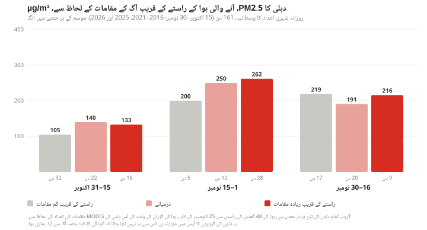
اکتوبر کے دوسرے نصف میں دہلی کا وسطانی PM2.5 کم گروپ والے دنوں میں 105 µg/m³، درمیانے گروپ میں 140 اور زیادہ گروپ میں 133 رہا۔ 1 سے 15 نومبر تک یہ 200، 250 اور 262 رہا، اگرچہ اس پندرھواڑے میں کم گروپ کے صرف 5 دن تھے۔ 16 سے 30 نومبر تک ایسا کوئی رجحان نہیں ملتا: 219، 191 اور 216۔
یعنی اکتوبر کے آخر اور نومبر کے شروع میں درمیانے اور زیادہ، دونوں گروپ کم گروپ سے اوپر رہے۔ مگر یہ سیدھی سیڑھی نہیں: اکتوبر کے آخر میں زیادہ گروپ درمیانے گروپ سے نیچے تھا۔
پرانے ڈیٹا کی ایک جانچ۔ پرانا ریکارڈ گھنٹوں کی دو ترتیبوں پر پڑھا جا سکتا ہے (دیکھیے "ہم نے یہ کام کیسے کیا")۔ ہم نے ان میں سے ایک استعمال کی۔ دوسری ترتیب سے زیادہ دن ملتے ہیں: 161 کی جگہ 238۔ اس بڑے نمونے کے لیے ہم نے تینوں گروپوں کی حدیں نئے سرے سے نکالیں: کم کا مطلب 6 یا اس سے کم مقامات اور زیادہ کا مطلب 104 سے زیادہ۔ پرانی حدیں برقرار رکھیں تب بھی نتیجہ مجموعی طور پر وہی رہتا ہے۔ نئی حدوں کے ساتھ تینوں گروپ اکتوبر کے آخر میں 105، 153 اور 185 اور نومبر کے شروع میں 236، 238 اور 286 ہیں، اور نومبر کے آخر میں پھر کوئی رجحان نہیں ملتا (189، 171 اور 172)۔ اس ترتیب پر زیادہ گروپ دونوں مدتوں میں سب سے اوپر ہے، اور نومبر کے شروع میں کم اور درمیانے گروپ تقریباً برابر ہیں۔ دونوں ترتیبوں پر اکتوبر کے آخر اور نومبر کے شروع میں زیادہ گروپ کم گروپ سے اوپر ہے۔ البتہ فرق کی مقدار بدل جاتی ہے۔
سردیوں کے دنوں سے موازنہ۔ اکتوبر اور نومبر ہی وہ مہینے ہیں جب دہلی کی ہوا کم گھلتی ملتی ہے، اس لیے اوپر والا رجحان کچھ حد تک موسم کا اثر بھی ہو سکتا ہے۔ ایک موٹی جانچ کے طور پر ہم نے آگ کے عروج کے ہفتوں، 25 اکتوبر سے 20 نومبر، کے ہر دن کا جوڑ اسی موسم کے دسمبر–جنوری کے ان دنوں سے بنایا جن میں ہوا کی نکاسی (مکسنگ ہائٹ ضرب ہوا کی رفتار) ملتی جلتی تھی۔ اس میں موسم کا صرف ایک پیمانہ ملایا گیا ہے۔ درجۂ حرارت، نمی، بارش یا ہوا کا رخ نہیں ملایا گیا۔ سردیوں کے یہ دن "آگ کے بغیر دہلی" نہیں ہیں۔
اس طرح صرف 57 دنوں کا جوڑ بن سکا: 2019 کے 8، 2021 کے 24 اور 2025 کے 25۔ ان دنوں کی اوسط 219 µg/m³ رہی، اور ان کے جوڑ کے سردیوں کے دنوں کی 161۔
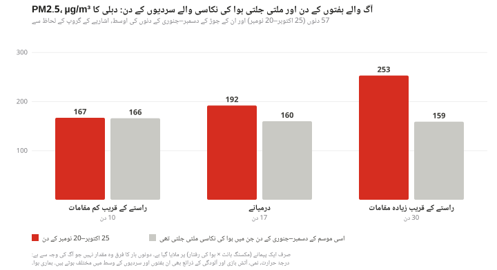
کم گروپ کے 10 دنوں میں دہلی کی اوسط 167 رہی، جبکہ جوڑ کے سردیوں کے دنوں میں 166۔ درمیانے گروپ کے 17 دنوں میں اوسط 192 رہی، سردیوں کے دنوں میں 160۔ زیادہ گروپ کے 30 دنوں میں اوسط 253 رہی، سردیوں کے دنوں میں 159: یعنی 94 زیادہ۔
موسم ایک جیسے نہیں ہیں۔ کم گروپ کے 10 دن صرف 2019 اور 2025 کے ہیں؛ 2021 میں ایسا ایک بھی دن نہیں۔ 2021 میں زیادہ گروپ کے 18 دن اپنے جوڑ کے سردیوں کے دنوں سے 87 اوپر تھے اور باقی دن 20 نیچے۔ 2025 میں زیادہ گروپ کے 11 دن 89 اوپر تھے اور باقی 15 اوپر۔ 2019 کے 8 دنوں میں سے صرف 1 دن زیادہ گروپ میں تھا۔
سردیوں سے یہ فرق اس پر منحصر ہے کہ کون سا ڈیٹا استعمال ہو۔ گھنٹوں کی دوسری ترتیب پر 4 موسموں کے 81 دنوں کا جوڑ بنتا ہے۔ تب کم گروپ کے دن اپنے جوڑ کے سردیوں کے دنوں سے 1 نہیں بلکہ 33 اوپر نکلتے ہیں، درمیانے گروپ کے دن 65 اوپر اور زیادہ گروپ کے 108 اوپر۔ تینوں گروپوں کی ترتیب قائم رہتی ہے، اعداد قائم نہیں رہتے۔
ہم کوئی فیصد کیوں نہیں بتاتے۔ ان موازنوں سے یہ طے نہیں ہوتا کہ دہلی کی آلودگی کا کتنے فیصد حصہ فصلوں کی آگ سے آتا ہے۔ جن دنوں آگ کے مقامات کم تھے ان دنوں بھی ہوا میں دھواں ہو سکتا ہے، گروپ سال اور دوسرے حالات کے لحاظ سے ایک دوسرے سے مختلف ہیں، اور ہوا کی نکاسی کے صرف ایک پیمانے پر ملائے گئے سردیوں کے دن "آگ کے بغیر" والی حالت کے برابر نہیں۔ اسی لیے ہم صرف وہ مقداریں بتاتے ہیں جو دیکھی گئیں، اور یہ کہ وہ کس چیز کے ساتھ گھٹتی بڑھتی ہیں۔
ایک شائع شدہ اندازہ۔ ہندوستان کے پیش گوئی کے نظام SAFAR نے 2021 کے موسم کے لیے روزانہ ماڈل کی بنیاد پر اندازے دیے کہ دہلی کے PM2.5 میں فصلوں کی آگ کے دھوئیں کا کتنا حصہ ہے۔ سینٹر فار سائنس اینڈ انوائرنمنٹ نے 10 اکتوبر سے 30 نومبر 2021 تک کے 52 دنوں کے ان اندازوں کا تجزیہ کیا [6]۔ روزانہ حصہ 1% سے 48% تک رہا، سب سے زیادہ 7 نومبر 2021 کو، اور 2 دن 40% سے اوپر رہا۔ یہ ایک ماڈل کا، ایک موسم کے لیے اندازہ ہے۔ ہم نے اسے پرکھا نہیں، اور ہمارا موازنہ بھی اس کی جانچ نہیں کرتا۔
دو اور جانچیں کسی نتیجے پر نہیں پہنچیں۔ ہم نے دہلی کے مانیٹروں پر کاربن مونو آکسائیڈ اور شہر کے اوپر دھند کی سیٹلائٹ ریڈنگز بھی دیکھیں۔ دونوں میں سے کسی نے زیادہ گروپ کے دنوں کو باقی دنوں سے الگ نہیں کیا۔ کاربن مونو آکسائیڈ کا ڈیٹا صرف 2025 اور 2026 کے لیے قابلِ استعمال ہے، اور خلا سے نظر آنے والی دھند میں ہوا کے پورے ستون کی ہر چیز شامل ہوتی ہے۔ یہ جانچیں اوپر والے رجحان کی نہ تائید کرتی ہیں نہ تردید۔ دونوں ڈیٹا فائل میں موجود ہیں۔
نومبر 2025 کا ہر دن، NOAA-20 سیٹلائٹ سے، دوپہر کے کچھ بعد، اس دن کے دہلی کے PM2.5 کے ساتھ۔ ہر تصویر پر سرخ نقطے اور لکھا ہوا عدد اس دن پورے نقشے کے علاقے میں، دونوں ملکوں میں، دن اور رات دونوں وقت کے MODIS کے مقامات ہیں؛ یہ صرف پنجاب اور ہریانہ کی گنتی نہیں۔ 21 سے 30 نومبر تک تصویروں میں روزانہ 36 یا اس سے کم مقامات ہیں (پنجاب اور ہریانہ میں 16 یا اس سے کم)، اور دہلی کے اعداد 142 سے 269 کے درمیان ہیں۔ اینیمیشن کی صورت میں دیکھیے۔ تصویریں: NASA Worldview/GIBS [11]۔
آگ کی گنتی گھٹی ہے، مگر جلانا شاید اتنا نہیں گھٹا
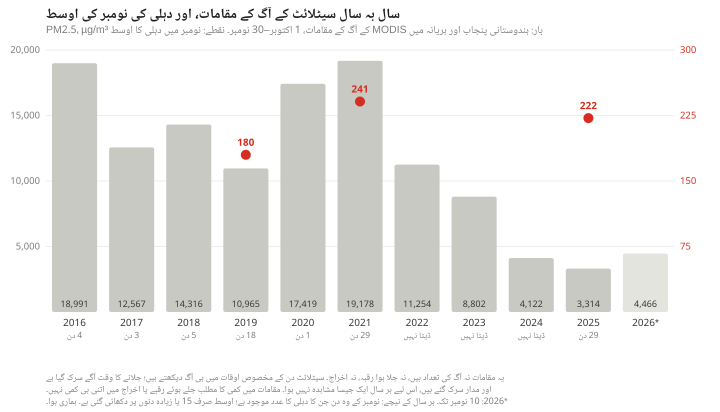
MODIS نے اکتوبر–نومبر 2021 میں پنجاب اور ہریانہ میں آگ کے 19,178 مقامات ریکارڈ کیے اور 2025 کے انہی مہینوں میں 3,314۔ NOAA-20 سیٹلائٹ کے آلے VIIRS نے 1 اکتوبر سے 10 نومبر 2021 تک 55,868 اور 2025 کے انہی ہفتوں میں 3,839 ریکارڈ کیے [7]۔ اس سال 10 نومبر تک MODIS نے ابتدائی، غیر نظرثانی شدہ ڈیٹا میں 4,466 ریکارڈ کیے ہیں۔
یہ گنتی یہ نہیں بتاتی کہ کتنا کچھ جلایا گیا، اور دونوں آلات کا ایک ہی بات کہنا بھی معاملہ طے نہیں کرتا۔ یہ آلات دن کے مخصوص اوقات میں ہی آگ دیکھ پاتے ہیں۔ جلانے کے وقت اور سیٹلائٹ کے مدار میں تبدیلیوں کی وجہ سے ہر سال آگ کا ایک جیسا حصہ نظر میں نہیں آتا۔
جلانے کا وقت دن میں آگے سرک گیا ہے۔ ہیرین جیٹھوا کی 2026 کی ایک تحقیق میں، جس میں ایک ایسا جیو اسٹیشنری سیٹلائٹ استعمال ہوا جو پوری سہ پہر دیکھتا رہتا ہے، یہ سامنے آیا کہ اس خطے میں جلانے کا عروج دوپہر تقریباً 1–2 بجے سے سرک کر شام 4–5 بجے پر چلا گیا ہے۔ اس سیٹلائٹ کو پنجاب میں 2024 میں 2021 کے مقابلے میں 49% کم گرم مقامات ملے اور 2025 میں 2024 کے مقابلے میں 45% زیادہ [8]۔ اس کا ایک پکسل تقریباً 4 کلومیٹر چوڑا ہے۔ یہ پکڑے گئے گرم مقامات ہیں، ہر کھیت کی آگ کی گنتی نہیں۔
جلا ہوا رقبہ آگ کی گنتی سے کم گھٹا۔ تحقیقی ادارے iFOREST کے مطابق 2024 اور 2025 میں پنجاب کے کھیتوں کی بڑی آگوں میں سے 90% سے زیادہ سہ پہر 3 بجے کے بعد پکڑی گئیں، جبکہ 2021 میں یہ تناسب 3% تھا۔ ادارے کے مطابق پنجاب کا جلا ہوا رقبہ 2022 کے 31,447 مربع کلومیٹر سے گھٹ کر 2025 میں تقریباً 20,000 مربع کلومیٹر رہ گیا، یعنی 37% کمی، جبکہ سیٹلائٹ کی آگ کی گنتی 2021 کے مقابلے میں 92% گھٹی [9]۔ یہ دونوں کمیاں الگ الگ برسوں سے ناپی گئی ہیں، اس لیے ان کا آپس میں سیدھا موازنہ نہیں بنتا۔
MODIS والے سیٹلائٹ اپنے مدار سے سرک گئے ہیں۔ ناسا کے مطابق Terra اور Aqua کے مدار سرک گئے ہیں، جس سے ان کے گزرنے کا وقت بدل گیا ہے اور اسکین کے درمیان خالی جگہیں بڑھ گئی ہیں، اور 2024 کے آخر سے اس کا نمایاں اثر پڑا ہے [10]۔ ہمارے ڈیٹا میں ان دو ریاستوں میں Terra کے پکڑے ہوئے مقامات 2021 کے 1,725 سے گھٹ کر 2025 میں 37 رہ گئے، اور Aqua کے 17,453 سے 3,277۔ اوپر والی تحقیق کے مطابق اس خطے پر Aqua کے گزرنے کا اوسط وقت 2021 میں 1:44 pm تھا جو 2025 میں 3:12 pm ہو گیا [8]۔
ہم نے ان دونوں تحقیقوں کے تجزیے خود دہرا کر نہیں دیکھے۔ ان تین باتوں کی وجہ سے ہم سالانہ گنتی کی بنیاد پر یہ نہیں کہتے کہ جلانا کتنا گھٹا ہے، اور دہلی کی ہوا کے ایک سال کا دوسرے سال سے موازنہ کر کے کوئی رجحان یا سبب اخذ نہیں کرتے۔ دہلی کی نومبر کی اوسط 2021 میں 241 µg/m³ اور 2025 میں 222 رہی، 2021 میں 29 دن اور 2025 میں 29 دن کے ڈیٹا کے ساتھ۔ ہر سال کا موسم مختلف ہوتا ہے، اور دو نومبروں سے کوئی رجحان ثابت نہیں ہوتا۔
یہ رپورٹ کیا نہیں بتا سکتی
دہلی کی آلودگی میں فصلوں کی آگ کا حصہ کتنا ہے۔ کسی قابلِ اعتبار فیصد کے لیے ایسا طریقہ چاہیے جو خود پرکھا جا چکا ہو، مثلاً ذرات کا کیمیائی تجزیہ یا ہوا کے معیار کا ایسا ماڈل جسے پیمائشوں سے ملا کر جانچا گیا ہو۔ یہ موازنے ایسا کوئی طریقہ نہیں ہیں۔
آگ نہ ہوتی تو دہلی کی ہوا کیسی ہوتی۔ نہ سالانہ اوسط یہ بتاتی ہے اور نہ سردیوں کی سطح۔
ہوا اصل میں کہاں سے گزری۔ ہمارے راستے زمین سے 100 میٹر اوپر کی ERA5 ہوا کے مطابق بنے ہیں۔ ان میں ہوا کی اوپر نیچے حرکت اور دھوئیں کا پھیلاؤ شامل نہیں، اور یہ 48 گھنٹے پر رک جاتے ہیں۔ ہم نے انہیں HYSPLIT جیسے کسی مستند آلے سے ملا کر نہیں دیکھا۔
اصل میں کتنا جلایا گیا۔ بادل یا دھوئیں کے نیچے کی آگ اور سیٹلائٹ کے گزرنے کے اوقات سے ہٹ کر لگائی گئی آگ سیٹلائٹ کی نظر سے رہ جاتی ہے۔ اس کا اثر سالانہ گنتی پر بھی پڑتا ہے اور ہر دن کے اشاریے پر بھی۔ یہ کمی ہر سال اور ہر آلے میں ایک جیسی نہیں ہوتی۔
آتش بازی۔ دیوالی آگ والے ہفتوں میں یا ان کے آس پاس پڑتی ہے، اور آتش بازی دوسرے دنوں میں بھی ہوتی ہے۔ ہم اسے آگ کے دھوئیں سے الگ نہیں کر سکتے۔
پرانے ڈیٹا کے انتخاب سے کتنا فرق پڑتا ہے۔ گھنٹوں کی دونوں ترتیبوں پر اکتوبر کے آخر اور نومبر کے شروع میں زیادہ گروپ کم گروپ سے اوپر ہے۔ فرق کی مقدار، اور سردیوں سے فرق، ترتیب کے ساتھ بدل جاتے ہیں۔
زیادہ تر سال۔ ہمارے دہلی کے ریکارڈ میں 17 اکتوبر 2022 سے 18 فروری 2025 تک ایک بھی قابلِ استعمال دن نہیں، اور 2016، 2017، 2018 اور 2020 میں بہت کم دن ہیں۔ موازنہ زیادہ تر 2019، 2021 اور 2025 پر کھڑا ہے۔ ہم نے یہ خلا کسی اور ذریعے سے نہیں بھرے۔
مانیٹر درست ہیں یا نہیں۔ ہم نے سرکاری ریڈنگز جیسی دوبارہ شائع ہوئیں ویسی ہی استعمال کیں اور کسی اسٹیشن کو کسی دوسرے آلے سے ملا کر نہیں پرکھا۔ اسٹیشنوں کی تعداد برسوں میں بدلتی رہی: نومبر کے ایک عام دن 2017 میں 7 اسٹیشن تھے، 2019 میں 30، 2021 میں 37 اور 2025 میں 45۔
ہم نے یہ کام کیسے کیا
PM2.5۔28.61°N 77.21°E سے 25 کلومیٹر کے اندر سرکاری مانیٹروں کے PM2.5 سینسروں کا OpenAQ ریکارڈ، جو 11 نومبر 2026 کو حاصل کیا گیا۔ 2025 سے ہم نے OpenAQ کا روزانہ ریکارڈ استعمال کیا۔ 2016–17 سے 2022–23 تک کے موسموں میں 1 اکتوبر سے 31 جنوری کے لیے ہم نے اس کا گھنٹہ وار ریکارڈ استعمال کیا، کیونکہ ان برسوں کی روزانہ گنتی میں ایک دوسرے پر چڑھے ہوئے گھنٹہ وار مجموعے شامل ہو سکتے ہیں۔ ہم نے ایک ہی ترتیب چنی جس میں مجموعے ایک دوسرے پر نہیں چڑھتے، یعنی وہ جو ہندوستانی وقت کے مطابق پورے گھنٹے پر ختم ہوتے ہیں، اور شرط رکھی کہ اس ترتیب پر کم از کم 18 درست مجموعے ہوں۔ اس محتاط پابندی سے آدھے گھنٹے پر ختم ہونے والے کچھ دستیاب مشاہدات باہر رہ جاتے ہیں۔ 2025 سے کسی اسٹیشن کے دن کے لیے 24 میں سے کم از کم 18 گھنٹے ضروری ہیں۔ دونوں صورتوں میں دن کی اوسط 0 سے اوپر اور 1,500 µg/m³ سے زیادہ نہیں ہونی چاہیے۔ شہری عدد تمام اسٹیشنوں کا وسطانیہ ہے، ان دنوں میں جب کم از کم پانچ اسٹیشن ہوں۔ اس طرح 822 دن بنتے ہیں: 239 گھنٹہ وار ریکارڈ سے اور 583 دن 2025 کے بعد کے۔ ماہانہ اور موسمی اعداد ان روزانہ اعداد کی اوسط ہیں۔ دوسری ترتیب پر، جس کے مجموعے آدھے گھنٹے پر ختم ہوتے ہیں، پرانے ریکارڈ سے 239 کی جگہ 424 دن ملتے ہیں۔ وہ ترتیب پرانے دنوں کو آدھا گھنٹہ کھسکا دیتی ہے، اس لیے ہم نے اسے صرف جانچ کے لیے استعمال کیا۔
آگ۔ NASA FIRMS کے MODIS مقامات (Terra اور Aqua)، 1 اکتوبر سے 30 نومبر، 2025 تک معیاری پروڈکٹ اور 2026 کے لیے (10 نومبر تک) تقریباً فوری ڈیٹا، اعتماد 30 یا اس سے زیادہ، نباتات کی ممکنہ آگ، علاقہ 73.0–79.5°E, 27.0–32.6°N۔ ہر مقام کے ساتھ اس کے ریکارڈ ہونے کا UTC وقت محفوظ ہے اور تاریخ ہندوستانی وقت کے مطابق لگائی گئی ہے۔ ملک اور ہندوستانی ریاست کا تعین سرحدوں کے نقشوں (پولی گون) سے کیا گیا ہے [12]۔
موسم۔ وسطی دہلی کے قریب ترین گرڈ پوائنٹ پر ERA5 کی گھنٹہ وار مکسنگ ہائٹ اور ہوا، Open-Meteo آرکائیو سے، ہندوستانی وقت میں۔ روزانہ ہوا کی نکاسی مکسنگ ہائٹ ضرب 100 میٹر کی ہوا کی رفتار ہے، اسی کیلنڈر دن کی اوسط جس دن کا PM2.5 کا عدد ہے۔
ہوا کے راستے میں آگ کے مقامات کا اشاریہ۔ ERA5 کی 100 میٹر کی ہوا، آدھے درجے کے گرڈ پر 27.5–33°N, 72.5–78.5°E کے اندر، جو ایک درجے کے گرڈ 24–35°N, 69–83°E کے اندر ہے۔ وسطی دہلی سے ہندوستانی وقت کے مطابق 03:00، 09:00، 15:00 اور 21:00 بجے ہر راستہ 15 منٹ کے قدموں میں 48 گھنٹے پیچھے جاتا ہے۔ کوئی مقام تب گنا جاتا ہے جب وہ راستے کے کسی گھنٹہ وار نقطے سے 25 کلومیٹر کے اندر ہو اور ہوا کے اس نقطے پر ہونے سے 24 گھنٹے پہلے سے 3 گھنٹے بعد تک ریکارڈ ہوا ہو۔ دن کا اشاریہ چاروں راستوں پر الگ الگ مقامات کی کل تعداد ہے۔ کوئی دن تبھی استعمال ہوتا ہے جب کوئی راستہ ہوا کا ڈیٹا نہ ہونے کی وجہ سے نہ رکا ہو؛ 161 میں سے 157 دنوں کے چاروں راستے پورے 48 گھنٹے کے ہیں، اور باقی دنوں میں کوئی راستہ ہوا کے گرڈ سے جلدی باہر نکل گیا۔ ہوا کا ڈیٹا 5 نومبر 2026 پر ختم ہوتا ہے۔ آخری دن جس کا اشاریہ اور دہلی کا عدد دونوں موجود ہیں، 2 نومبر 2026 ہے۔
سردیوں سے موازنہ۔ 25 اکتوبر سے 20 نومبر تک ہر دن کا جوڑ اسی موسم کے دسمبر–جنوری کے زیادہ سے زیادہ پانچ (کم از کم تین) ایسے دنوں سے بنایا گیا ہے جن کی ہوا کی نکاسی اس دن کی نکاسی کے 1.25 گنا کے اندر ہو۔ ان 57 دنوں کے لیے سردیوں کے 93 مختلف دن استعمال ہوئے، جن میں سے 64 ایک سے زیادہ بار۔ ہر جوڑ کی فہرست ڈیٹا کے ساتھ موجود ہے۔
ہر چارٹ اور جدول کے پیچھے کا ڈیٹا اور انہیں بنانے والے اسکرپٹ اس سائٹ کی ریپوزٹری میں scripts/reports/delhi-smog-fires/ کے تحت موجود ہیں۔
ذرائع
OpenAQ، API v3، وسطی دہلی سے 25 کلومیٹر کے اندر کے مقامات کا گھنٹہ وار اور روزانہ ریکارڈ، جو اصل میں سینٹرل پولوشن کنٹرول بورڈ کے مانیٹرنگ نیٹ ورک کا ہے۔ openaq.org
अक्टूबर 2026 तक के बारह महीनों में जिन 332 दिनों का डेटा उपलब्ध है, उनमें दिल्ली और आसपास के सरकारी मॉनिटरों पर महीन कणों (PM2.5) का औसत 92 µg/m³ रहा। भारत का सालाना मानक 40 है। यह प्रदूषण किसी एक मौसम की बात नहीं, हर मौसम में बना रहता है। दिसंबर और जनवरी में, जब धान की पराली जलाने का मुख्य सीज़न बीत चुका होता है, प्रदूषण लगभग उतना ही रहता है जितना आग वाले हफ़्तों में। हर साल अक्टूबर और नवंबर में दिल्ली के उत्तर-पश्चिम में, पंजाब और हरियाणा के खेतों में पराली जलाई जाती है। अक्टूबर के आख़िर और नवंबर की शुरुआत के उपलब्ध रिकॉर्ड में, जिन दिनों दिल्ली पहुँचने वाली हवा के रास्ते में आग के निशान मध्यम या ज़्यादा थे, उन दिनों PM2.5 उन दिनों से ज़्यादा रहा जब ये निशान कम थे। यह अंतर कितना था, यह इस पर निर्भर रहा कि कौन-से दिन देखे जाएँ और डेटा कैसे चुना जाए। यह रिपोर्ट यह नहीं बता सकती कि दिल्ली के प्रदूषण का कितने प्रतिशत हिस्सा इन आगों से आता है।
92µg/m³: नवंबर 2025 से अक्टूबर 2026 तक डेटा वाले 332 दिनों में दिल्ली का औसत PM2.5; भारत का सालाना मानक 40 है
179 / 332इनमें से इतने दिन भारत के 24 घंटे के मानक 60 µg/m³ से ऊपर रहे
38µg/m³: मानसून के महीनों, जून से सितंबर 2026, का औसत; साल का यही एक हिस्सा सालाना मानक के क़रीब रहा
167–192µg/m³: पराली का मुख्य सीज़न बीतने के बाद दिसंबर–जनवरी का औसत, उन 3 सीज़नों में जिनका पर्याप्त डेटा है
इस रिपोर्ट को ख़ुद जाँचिए। यहाँ दिया गया हर आंकड़ा data.json में मौजूद है, अपने स्रोत, अवधि, जगह, इकाई और गणना के तरीक़े के साथ। आग की गिनती नासा के सैटेलाइट की पकड़ी हुई गर्मी के निशान हैं; ये न पुष्ट आग हैं और न जला हुआ रक़बा। नीचे दिनों की जो तुलनाएँ हैं, वे सिर्फ़ साथ-साथ दिखे रुझान हैं। ये इस बात की माप नहीं हैं कि दिल्ली के कण कहाँ से आते हैं।
हर मौसम में प्रदूषित
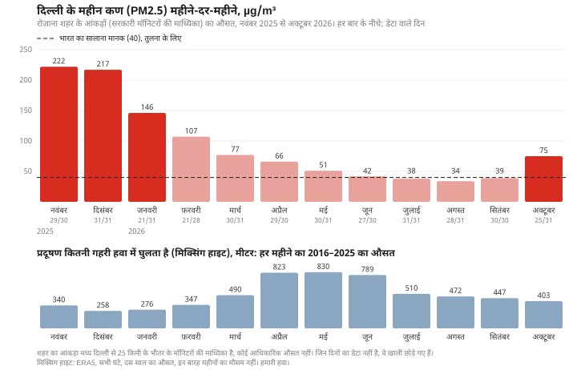
हमने मध्य दिल्ली से 25 किलोमीटर के दायरे में लगे सभी सरकारी मॉनिटरों की रीडिंग इस्तेमाल कीं, जिन्हें OpenAQ दोबारा प्रकाशित करता है [1]। ये स्टेशन दिल्ली प्रदूषण नियंत्रण समिति, भारत मौसम विज्ञान विभाग, केंद्रीय प्रदूषण नियंत्रण बोर्ड और पड़ोसी राज्यों उत्तर प्रदेश व हरियाणा के प्रदूषण बोर्ड चलाते हैं। पिछले एक साल में आम तौर पर रोज़ 44 स्टेशन रीडिंग दे रहे थे। हर दिन के लिए हमने सभी स्टेशनों की माध्यिका (मीडियन) ली, और हर महीने के लिए इन रोज़ाना आंकड़ों का औसत।
नवंबर 2025 में मासिक औसत 222 µg/m³ और दिसंबर में 217 रहा। सबसे कम मानसून में रहा: जुलाई 2026 में 38, अगस्त में 34 और सितंबर में 39। PM2.5 के लिए भारत के राष्ट्रीय मानक 24 घंटे के लिए 60 µg/m³ और साल भर के लिए 40 हैं [2]। विश्व स्वास्थ्य संगठन की सुझाई सीमाएँ 15 और 5 हैं [3]।
नवंबर 2025 से अक्टूबर 2026 तक के 365 दिनों में से 332 दिनों का शहर का आंकड़ा मौजूद है। इनका औसत 92 रहा, जो सालाना मानक का 2.3 गुना है। यह कोई आधिकारिक सालाना औसत नहीं है, और जिन दिनों का डेटा नहीं है वे साल भर में बराबर नहीं बँटे: जनवरी के 31 में से 21 दिन, फ़रवरी के 28 में से 21 और अक्टूबर के 31 में से 25 दिन उपलब्ध हैं। इन 332 दिनों में से 179 दिन शहर का आंकड़ा 60 से ऊपर रहा, और 329 दिन विश्व स्वास्थ्य संगठन की 24 घंटे की सीमा 15 से ऊपर।
यह 92 पूरे साल का आंकड़ा है, जिसमें आग वाले हफ़्ते भी शामिल हैं। यह वह स्तर नहीं है जो आग के बिना दिल्ली में होता। फ़रवरी से सितंबर 2026 तक औसत 55 रहा (226 दिन)। इन्हीं महीनों में अप्रैल और मई भी आते हैं, जब गेहूँ की कटाई के बाद भी नरवाई जलाई जाती है [14]। इस रिपोर्ट में उसकी पड़ताल नहीं की गई। सिर्फ़ मानसून के चार महीनों, जून से सितंबर, में औसत सालाना मानक के क़रीब रहा, यानी 38।
भारत का पर्यावरण मंत्रालय इस इलाक़े के प्रदूषण की वजहों में गाड़ियों, उद्योगों, निर्माण और सड़कों की धूल, बायोमास और कचरा जलाने समेत कई स्रोत गिनाता है। मंत्रालय के मुताबिक़ पराली जलाना और पटाख़े समय-समय पर इसे और बढ़ाते हैं, और धान की पराली जलाने का असर इलाक़े की हवा पर ख़ास तौर पर अक्टूबर और नवंबर में पड़ता है [13]। इस रिपोर्ट में इनमें से किसी स्रोत को अलग से नहीं नापा गया।
दिसंबर और जनवरी लगभग उतने ही प्रदूषित हैं जितने आग वाले हफ़्ते। दिसंबर तक धान की पराली जलाने का मुख्य सीज़न ख़त्म हो चुका होता है। सिर्फ़ तीन सीज़न ऐसे हैं जिनमें दोनों अवधियों का इतना डेटा है कि तुलना हो सके।
दिल्ली का औसत PM2.5, µg/m³, 15 अक्टूबर से 30 नवंबर तक और उसके बाद के दो महीनों में। वे सीज़न जिनमें क्रमशः कम से कम 25 और 30 दिन का डेटा है।
सीज़न
15 अक्टूबर–30 नवंबर
दिन
दिसंबर–जनवरी
दिन
2019–20
157
30
192
47
2021–22
188
45
167
30
2025–26
197
45
189
52
इन सीज़नों में दिसंबर–जनवरी के दौरान दिल्ली का औसत 167 से 192 µg/m³ रहा। यह तालिका यह नहीं बताती कि आग न होती तो अक्टूबर और नवंबर कैसे होते। सर्दियों में ठंड ज़्यादा होती है और हवा कम घुलती-मिलती है, इसलिए उस मौसम के प्रदूषण की अपनी वजहें हैं।
अक्टूबर और नवंबर में क्या बदल जाता है
हवा कम घुलती-मिलती है। प्रदूषण ऊपर की ओर हवा की एक परत में फैलता है, और इस परत की गहराई मौसम के साथ बदलती रहती है। मौसम के पुनर्विश्लेषण ERA5 के मुताबिक़ 2016–2025 में मध्य दिल्ली के ऊपर यह परत, दिन-रात के सभी घंटे मिलाकर, अप्रैल में औसतन 823 मीटर और मई में 830 मीटर गहरी रही [4]। अक्टूबर में यह 403 मीटर, नवंबर में 340 मीटर और दिसंबर में 258 मीटर रह गई। अक्टूबर से दिसंबर तक रात के समय यह औसतन सिर्फ़ 54 से 66 मीटर रही। यानी उतना ही धुआँ कहीं कम हवा में समाता है। ये एक मौसम मॉडल के दस साल के औसत हैं, 2025–26 की माप नहीं।
हवा उत्तर-पश्चिम से चलने लगती है। मानसून के महीनों में दिल्ली से 100 मीटर ऊपर की हवा 17% से 34% समय पश्चिम और उत्तर के बीच वाली दिशा से चलती है। अक्टूबर में यह अनुपात 51%, नवंबर में 61% और दिसंबर में 72% हो जाता है। हरियाणा और पंजाब इसी दिशा में हैं। मगर उत्तर भारत में सर्दियों की आम हवा भी इसी ओर से चलती है, इसलिए किसी दिन उत्तर-पश्चिमी हवा का चलना अपने आप में धुएँ का सबूत नहीं है।
खेत जलते हैं। धान की कटाई के बाद पंजाब और हरियाणा के बहुत-से किसान गेहूँ के लिए खेत ख़ाली करने को पराली जला देते हैं। नासा के सैटेलाइट उपकरण MODIS [5] ने 2016 से 2021 तक हर अक्टूबर–नवंबर में इन दो राज्यों में आग के 10,965 से 19,178 निशान दर्ज किए। इनमें से ज़्यादातर दिल्ली से दूर हैं। 2016 से 2025 तक हर साल पंजाब के निशानों की माध्यिका दूरी शहर के केंद्र से 297 से 308 किलोमीटर और हरियाणा के निशानों की 149 से 185 किलोमीटर रही। हमारे अध्ययन क्षेत्र के भारतीय हिस्से में सिर्फ़ 1.1% निशान दिल्ली से 100 किलोमीटर के भीतर थे।
हवा के रास्ते की आग और दिल्ली की हवा
हमने किस चीज़ की तुलना की। धुआँ दिल्ली तभी पहुँचता है जब हवा उसे वहाँ ले जाए। इसलिए 15 अक्टूबर से 30 नवंबर तक हर दिन, दिन में चार बार, हमने मध्य दिल्ली पहुँचने वाली हवा का रास्ता हवा के रुख़ के साथ 48 घंटे पीछे तक निकाला। फिर हमने MODIS के वे निशान गिने जो उस रास्ते से 25 किलोमीटर के भीतर थे और हवा के वहाँ से गुज़रने से 24 घंटे पहले से लेकर 3 घंटे बाद तक दर्ज हुए। इस गिनती को हम हवा के रास्ते में आग के निशानों का अनुमानित सूचकांक कहते हैं। यह एक मोटा पैमाना है। इससे यह साबित नहीं होता कि हवा सचमुच किसी जलते खेत के ऊपर से गुज़री, और जो आग सैटेलाइट को नहीं दिखी वह इसमें शामिल नहीं है।
इस तरह गिने गए निशानों में से 83% भारतीय पंजाब में, 11% हरियाणा में और 5% पाकिस्तान में थे। ऐसे 161 दिन हैं जिनका सूचकांक भी है और दिल्ली का आंकड़ा भी। इनमें से ज़्यादातर तीन सीज़नों के हैं: 2019 के 30 दिन, 2021 के 45 और 2025 के 45। 2018 के 19 दिन, 2026 के 14, और 2016, 2017 व 2020 के मिलाकर 8 दिन हैं। हमने सूचकांक के हिसाब से दिनों को तीन बराबर समूहों में बाँटा: कम निशान (3 या उससे कम), मध्यम, और ज़्यादा (82 से अधिक)।
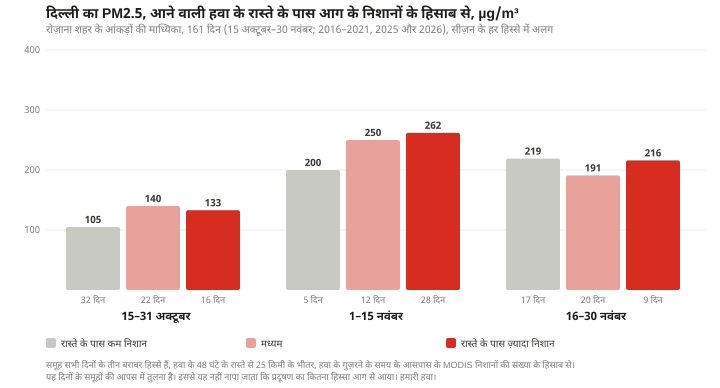
अक्टूबर के दूसरे पखवाड़े में दिल्ली का माध्यिका PM2.5 कम समूह वाले दिनों में 105 µg/m³, मध्यम समूह में 140 और ज़्यादा समूह में 133 रहा। 1 से 15 नवंबर तक यह 200, 250 और 262 रहा, हालाँकि उस पखवाड़े में कम समूह के सिर्फ़ 5 दिन थे। 16 से 30 नवंबर तक ऐसा कोई रुझान नहीं दिखता: 219, 191 और 216।
यानी अक्टूबर के आख़िर और नवंबर की शुरुआत में मध्यम और ज़्यादा, दोनों समूह कम समूह से ऊपर रहे। मगर यह सीधी सीढ़ी नहीं है: अक्टूबर के आख़िर में ज़्यादा समूह मध्यम समूह से नीचे था।
पुराने डेटा की एक जाँच। पुराना रिकॉर्ड घंटों की दो तरह की गिनती पर पढ़ा जा सकता है (देखें "हमने यह कैसे किया")। हमने इनमें से एक इस्तेमाल की। दूसरी से ज़्यादा दिन मिलते हैं: 161 की जगह 238। इस बड़े नमूने के लिए हमने तीनों समूहों की सीमाएँ नए सिरे से निकालीं: कम का मतलब 6 या उससे कम निशान और ज़्यादा का मतलब 104 से अधिक। पुरानी सीमाएँ ही रखें तब भी नतीजा कुल मिलाकर वही रहता है। नई सीमाओं के साथ तीनों समूह अक्टूबर के आख़िर में 105, 153 और 185 तथा नवंबर की शुरुआत में 236, 238 और 286 हैं, और नवंबर के आख़िर में फिर कोई रुझान नहीं दिखता (189, 171 और 172)। इस गिनती पर ज़्यादा समूह दोनों अवधियों में सबसे ऊपर है, और नवंबर की शुरुआत में कम और मध्यम समूह लगभग बराबर हैं। दोनों गिनतियों पर अक्टूबर के आख़िर और नवंबर की शुरुआत में ज़्यादा समूह कम समूह से ऊपर है। हाँ, अंतर का आकार बदल जाता है।
सर्दियों के दिनों से तुलना। अक्टूबर और नवंबर ही वे महीने हैं जब दिल्ली की हवा कम घुलती-मिलती है, इसलिए ऊपर वाला रुझान कुछ हद तक मौसम का असर भी हो सकता है। एक मोटी जाँच के तौर पर हमने आग के चरम हफ़्तों, 25 अक्टूबर से 20 नवंबर, के हर दिन की जोड़ी उसी सीज़न के दिसंबर–जनवरी के उन दिनों से बनाई जिनमें हवा की निकासी (मिक्सिंग हाइट गुणा हवा की रफ़्तार) मिलती-जुलती थी। इसमें मौसम का सिर्फ़ एक पैमाना मिलाया गया है। तापमान, नमी, बारिश या हवा की दिशा नहीं मिलाई गई। सर्दियों के ये दिन "आग के बिना दिल्ली" नहीं हैं।
इस तरह सिर्फ़ 57 दिनों की जोड़ी बन सकी: 2019 के 8, 2021 के 24 और 2025 के 25। इन दिनों का औसत 219 µg/m³ रहा, और इनकी जोड़ी के सर्दियों के दिनों का 161।
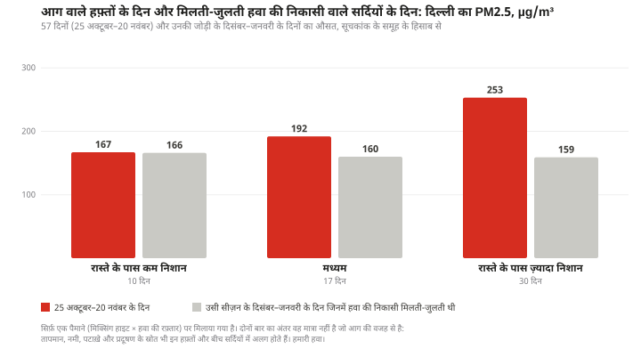
कम समूह के 10 दिनों में दिल्ली का औसत 167 रहा, जबकि जोड़ी के सर्दियों के दिनों में 166। मध्यम समूह के 17 दिनों में औसत 192 रहा, सर्दियों के दिनों में 160। ज़्यादा समूह के 30 दिनों में औसत 253 रहा, सर्दियों के दिनों में 159: यानी 94 ज़्यादा।
सीज़न एक जैसे नहीं हैं। कम समूह के 10 दिन सिर्फ़ 2019 और 2025 के हैं; 2021 में ऐसा एक भी दिन नहीं। 2021 में ज़्यादा समूह के 18 दिन अपनी जोड़ी के सर्दियों के दिनों से 87 ऊपर थे और बाक़ी दिन 20 नीचे। 2025 में ज़्यादा समूह के 11 दिन 89 ऊपर थे और बाक़ी 15 ऊपर। 2019 के 8 दिनों में से सिर्फ़ 1 दिन ज़्यादा समूह में था।
सर्दियों से यह अंतर इस पर निर्भर है कि कौन-सा डेटा इस्तेमाल हो। घंटों की दूसरी गिनती पर 4 सीज़नों के 81 दिनों की जोड़ी बनती है। तब कम समूह के दिन अपनी जोड़ी के सर्दियों के दिनों से 1 नहीं बल्कि 33 ऊपर निकलते हैं, मध्यम समूह के दिन 65 ऊपर और ज़्यादा समूह के 108 ऊपर। तीनों समूहों का क्रम बना रहता है, आंकड़े नहीं टिकते।
हम कोई प्रतिशत क्यों नहीं बताते। इन तुलनाओं से यह तय नहीं होता कि दिल्ली के प्रदूषण का कितने प्रतिशत हिस्सा पराली की आग से आता है। जिन दिनों आग के निशान कम थे, उन दिनों भी हवा में धुआँ हो सकता है; समूह साल और दूसरी परिस्थितियों के लिहाज़ से एक-दूसरे से अलग हैं; और हवा की निकासी के सिर्फ़ एक पैमाने पर मिलाए गए सर्दियों के दिन "आग के बिना" वाली हालत के बराबर नहीं हैं। इसीलिए हम सिर्फ़ वे मात्राएँ बताते हैं जो देखी गईं, और यह कि वे किस चीज़ के साथ घटती-बढ़ती हैं।
एक प्रकाशित अनुमान। भारत की पूर्वानुमान प्रणाली SAFAR ने 2021 के सीज़न के लिए रोज़ाना मॉडल-आधारित अनुमान दिए कि दिल्ली के PM2.5 में पराली के धुएँ का कितना हिस्सा है। सेंटर फ़ॉर साइंस एंड एनवायरनमेंट ने 10 अक्टूबर से 30 नवंबर 2021 तक के 52 दिनों के इन अनुमानों का विश्लेषण किया [6]। रोज़ाना हिस्सा 1% से 48% तक रहा, सबसे ज़्यादा 7 नवंबर 2021 को, और 2 दिन 40% से ऊपर रहा। यह एक मॉडल का, एक सीज़न के लिए अनुमान है। हमने इसे परखा नहीं है, और हमारी तुलना भी इसकी जाँच नहीं करती।
दो और जाँचें किसी नतीजे पर नहीं पहुँचीं। हमने दिल्ली के मॉनिटरों पर कार्बन मोनोऑक्साइड और शहर के ऊपर धुंध की सैटेलाइट रीडिंग भी देखीं। दोनों में से किसी ने ज़्यादा समूह के दिनों को बाक़ी दिनों से अलग नहीं किया। कार्बन मोनोऑक्साइड का डेटा सिर्फ़ 2025 और 2026 के लिए इस्तेमाल लायक़ है, और अंतरिक्ष से दिखने वाली धुंध में हवा के पूरे स्तंभ की हर चीज़ शामिल होती है। ये जाँचें ऊपर वाले रुझान का न समर्थन करती हैं, न खंडन। दोनों डेटा फ़ाइल में हैं।
नवंबर 2025 का हर दिन, NOAA-20 सैटेलाइट से, दोपहर के कुछ बाद, उस दिन के दिल्ली के PM2.5 के साथ। हर तस्वीर पर लाल बिंदु और लिखी हुई संख्या उस दिन पूरे नक़्शे के इलाक़े में, दोनों देशों में, दिन और रात दोनों समय के MODIS के निशान हैं; यह सिर्फ़ पंजाब और हरियाणा की गिनती नहीं है। 21 से 30 नवंबर तक तस्वीरों में रोज़ 36 या उससे कम निशान हैं (पंजाब और हरियाणा में 16 या उससे कम), और दिल्ली के आंकड़े 142 से 269 के बीच हैं। एनिमेशन के रूप में देखिए। तस्वीरें: NASA Worldview/GIBS [11]।
आग की गिनती घटी है, मगर जलाना शायद उतना नहीं घटा
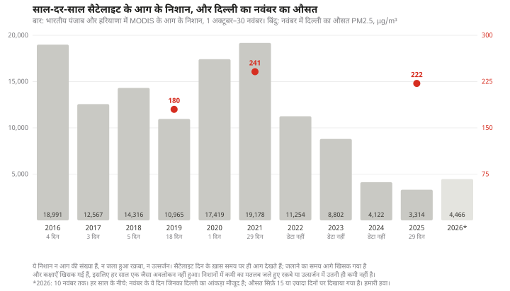
MODIS ने अक्टूबर–नवंबर 2021 में पंजाब और हरियाणा में आग के 19,178 निशान दर्ज किए और 2025 के इन्हीं महीनों में 3,314। NOAA-20 सैटेलाइट के उपकरण VIIRS ने 1 अक्टूबर से 10 नवंबर 2021 तक 55,868 और 2025 के इन्हीं हफ़्तों में 3,839 दर्ज किए [7]। इस साल 10 नवंबर तक MODIS ने शुरुआती, बिना समीक्षा वाले डेटा में 4,466 दर्ज किए हैं।
यह गिनती यह नहीं बताती कि कितना कुछ जलाया गया, और दोनों उपकरणों का एक ही बात कहना भी मामला तय नहीं करता। ये उपकरण दिन के ख़ास समय पर ही आग देख पाते हैं। जलाने के समय और सैटेलाइट की कक्षा में बदलाव की वजह से हर साल आग का एक जैसा हिस्सा नज़र में नहीं आता।
जलाने का समय दिन में आगे खिसक गया है। हिरेन जेठवा के 2026 के एक अध्ययन में, जिसमें ऐसा भूस्थिर (जियोस्टेशनरी) सैटेलाइट इस्तेमाल हुआ जो पूरी दोपहर बाद तक देखता रहता है, यह सामने आया कि इस इलाक़े में जलाने का चरम दोपहर लगभग 1–2 बजे से खिसककर शाम 4–5 बजे पर चला गया है। उस सैटेलाइट को पंजाब में 2024 में 2021 के मुक़ाबले 49% कम गर्म निशान मिले और 2025 में 2024 के मुक़ाबले 45% ज़्यादा [8]। इसका एक पिक्सेल लगभग 4 किलोमीटर चौड़ा है। ये पकड़े गए गर्म निशान हैं, हर खेत की आग की गिनती नहीं।
जला हुआ रक़बा आग की गिनती से कम घटा। शोध संस्था iFOREST के मुताबिक़ 2024 और 2025 में पंजाब के खेतों की बड़ी आगों में से 90% से ज़्यादा दोपहर 3 बजे के बाद पकड़ी गईं, जबकि 2021 में यह अनुपात 3% था। संस्था के मुताबिक़ पंजाब का जला हुआ रक़बा 2022 के 31,447 वर्ग किलोमीटर से घटकर 2025 में लगभग 20,000 वर्ग किलोमीटर रह गया, यानी 37% की कमी, जबकि सैटेलाइट की आग की गिनती 2021 के मुक़ाबले 92% घटी [9]। ये दोनों गिरावटें अलग-अलग सालों से नापी गई हैं, इसलिए इनकी आपस में सीधी तुलना नहीं बनती।
MODIS वाले सैटेलाइट अपनी कक्षा से खिसक गए हैं। नासा के मुताबिक़ Terra और Aqua की कक्षाएँ खिसक गई हैं, जिससे उनके गुज़रने का समय बदल गया है और स्कैन के बीच की ख़ाली जगहें बढ़ गई हैं, और 2024 के आख़िर से इसका ख़ासा असर पड़ा है [10]। हमारे डेटा में इन दो राज्यों में Terra के पकड़े निशान 2021 के 1,725 से घटकर 2025 में 37 रह गए, और Aqua के 17,453 से 3,277। ऊपर वाले अध्ययन के मुताबिक़ इस इलाक़े पर Aqua के गुज़रने का औसत समय 2021 में 1:44 pm था, जो 2025 में 3:12 pm हो गया [8]।
हमने इन दोनों अध्ययनों के विश्लेषण ख़ुद दोहराकर नहीं देखे हैं। इन तीन बातों की वजह से हम सालाना गिनती के आधार पर यह नहीं कहते कि जलाना कितना घटा है, और दिल्ली की हवा के एक साल की दूसरे साल से तुलना करके कोई रुझान या कारण नहीं निकालते। दिल्ली का नवंबर का औसत 2021 में 241 µg/m³ और 2025 में 222 रहा, 2021 में 29 दिन और 2025 में 29 दिन के डेटा के साथ। हर साल का मौसम अलग होता है, और दो नवंबरों से कोई रुझान साबित नहीं होता।
यह रिपोर्ट क्या नहीं बता सकती
दिल्ली के प्रदूषण में पराली की आग का हिस्सा कितना है। किसी भरोसेमंद प्रतिशत के लिए ऐसा तरीक़ा चाहिए जो ख़ुद परखा जा चुका हो, जैसे कणों का रासायनिक विश्लेषण या हवा की गुणवत्ता का ऐसा मॉडल जिसे माप से मिलाकर जाँचा गया हो। ये तुलनाएँ ऐसा कोई तरीक़ा नहीं हैं।
आग न होती तो दिल्ली की हवा कैसी होती। न सालाना औसत यह बताता है, न सर्दियों का स्तर।
हवा असल में कहाँ से गुज़री। हमारे रास्ते ज़मीन से 100 मीटर ऊपर की ERA5 हवा के मुताबिक़ बने हैं। इनमें हवा की ऊपर-नीचे की चाल और धुएँ का फैलाव शामिल नहीं है, और ये 48 घंटे पर रुक जाते हैं। हमने इन्हें HYSPLIT जैसे किसी स्थापित टूल से मिलाकर नहीं देखा।
असल में कितना जलाया गया। बादल या धुएँ के नीचे की आग और सैटेलाइट के गुज़रने के समय से हटकर लगाई गई आग सैटेलाइट की नज़र से छूट जाती है। इसका असर सालाना गिनती पर भी पड़ता है और हर दिन के सूचकांक पर भी। यह कमी हर साल और हर उपकरण में एक जैसी नहीं होती।
पटाख़े। दिवाली आग वाले हफ़्तों में या उनके आसपास पड़ती है, और पटाख़े दूसरे दिनों में भी चलते हैं। हम इन्हें आग के धुएँ से अलग नहीं कर सकते।
पुराने डेटा के चुनाव से कितना फ़र्क़ पड़ता है। घंटों की दोनों गिनतियों पर अक्टूबर के आख़िर और नवंबर की शुरुआत में ज़्यादा समूह कम समूह से ऊपर है। अंतर का आकार, और सर्दियों से अंतर, गिनती के साथ बदल जाते हैं।
ज़्यादातर साल। हमारे दिल्ली के रिकॉर्ड में 17 अक्टूबर 2022 से 18 फ़रवरी 2025 तक एक भी इस्तेमाल लायक़ दिन नहीं है, और 2016, 2017, 2018 व 2020 में बहुत कम दिन हैं। तुलना मुख्य रूप से 2019, 2021 और 2025 पर टिकी है। हमने ये ख़ाली जगहें किसी और स्रोत से नहीं भरीं।
मॉनिटर सही हैं या नहीं। हमने सरकारी रीडिंग जैसी दोबारा प्रकाशित हुईं वैसी ही इस्तेमाल कीं और किसी स्टेशन को किसी दूसरे उपकरण से मिलाकर नहीं परखा। स्टेशनों की संख्या सालों में बदलती रही: नवंबर के एक आम दिन 2017 में 7 स्टेशन थे, 2019 में 30, 2021 में 37 और 2025 में 45।
हमने यह कैसे किया
PM2.5. 28.61°N 77.21°E से 25 किलोमीटर के भीतर सरकारी मॉनिटरों के PM2.5 सेंसरों का OpenAQ रिकॉर्ड, जो 11 नवंबर 2026 को लिया गया। 2025 से हमने OpenAQ का रोज़ाना रिकॉर्ड इस्तेमाल किया। 2016–17 से 2022–23 तक के सीज़नों में 1 अक्टूबर से 31 जनवरी के लिए हमने उसका घंटेवार रिकॉर्ड इस्तेमाल किया, क्योंकि उन सालों की रोज़ाना गिनती में एक-दूसरे पर चढ़े हुए घंटेवार औसत शामिल हो सकते हैं। हमने एक ही गिनती चुनी जिसमें ये औसत एक-दूसरे पर नहीं चढ़ते, यानी वे जो भारतीय समय के हिसाब से पूरे घंटे पर ख़त्म होते हैं, और शर्त रखी कि उस गिनती पर कम से कम 18 मान्य औसत हों। इस सतर्क पाबंदी से आधे घंटे पर ख़त्म होने वाले कुछ उपलब्ध अवलोकन बाहर रह जाते हैं। 2025 से किसी स्टेशन के दिन के लिए 24 में से कम से कम 18 घंटे ज़रूरी हैं। दोनों सूरतों में दिन का औसत 0 से ऊपर और 1,500 µg/m³ से ज़्यादा नहीं होना चाहिए। शहर का आंकड़ा सभी स्टेशनों की माध्यिका है, उन दिनों में जब कम से कम पाँच स्टेशन हों। इस तरह 822 दिन बनते हैं: 239 घंटेवार रिकॉर्ड से और 583 दिन 2025 के बाद के। मासिक और सीज़न के आंकड़े इन रोज़ाना आंकड़ों का औसत हैं। दूसरी गिनती पर, जिसके औसत आधे घंटे पर ख़त्म होते हैं, पुराने रिकॉर्ड से 239 की जगह 424 दिन मिलते हैं। वह गिनती पुराने दिनों को आधा घंटा खिसका देती है, इसलिए हमने उसे सिर्फ़ जाँच के लिए इस्तेमाल किया।
आग। NASA FIRMS के MODIS निशान (Terra और Aqua), 1 अक्टूबर से 30 नवंबर, 2025 तक मानक प्रोडक्ट और 2026 के लिए (10 नवंबर तक) लगभग तुरंत वाला डेटा, भरोसा 30 या उससे ज़्यादा, वनस्पति की संभावित आग, इलाक़ा 73.0–79.5°E, 27.0–32.6°N। हर निशान के साथ उसके दर्ज होने का UTC समय रखा गया है और तारीख़ भारतीय समय के हिसाब से लगाई गई है। देश और भारतीय राज्य सीमाओं के नक़्शों (पॉलीगॉन) से तय किए गए हैं [12]।
मौसम। मध्य दिल्ली के सबसे नज़दीकी ग्रिड पॉइंट पर ERA5 की घंटेवार मिक्सिंग हाइट और हवा, Open-Meteo आर्काइव से, भारतीय समय में। रोज़ाना हवा की निकासी मिक्सिंग हाइट गुणा 100 मीटर की हवा की रफ़्तार है, उसी कैलेंडर दिन का औसत जिस दिन का PM2.5 का आंकड़ा है।
हवा के रास्ते में आग के निशानों का सूचकांक। ERA5 की 100 मीटर की हवा, आधे डिग्री के ग्रिड पर 27.5–33°N, 72.5–78.5°E के भीतर, जो एक डिग्री के ग्रिड 24–35°N, 69–83°E के भीतर है। मध्य दिल्ली से भारतीय समय के हिसाब से 03:00, 09:00, 15:00 और 21:00 बजे हर रास्ता 15 मिनट के क़दमों में 48 घंटे पीछे जाता है। कोई निशान तब गिना जाता है जब वह रास्ते के किसी घंटेवार बिंदु से 25 किलोमीटर के भीतर हो और हवा के उस बिंदु पर होने से 24 घंटे पहले से 3 घंटे बाद तक दर्ज हुआ हो। दिन का सूचकांक चारों रास्तों पर अलग-अलग निशानों की कुल संख्या है। कोई दिन तभी इस्तेमाल होता है जब कोई रास्ता हवा का डेटा न होने की वजह से न रुका हो; 161 में से 157 दिनों के चारों रास्ते पूरे 48 घंटे के हैं, और बाक़ी दिनों में कोई रास्ता हवा के ग्रिड से जल्दी बाहर निकल गया। हवा का डेटा 5 नवंबर 2026 पर ख़त्म होता है। आख़िरी दिन जिसका सूचकांक और दिल्ली का आंकड़ा दोनों मौजूद हैं, 2 नवंबर 2026 है।
सर्दियों से तुलना। 25 अक्टूबर से 20 नवंबर तक हर दिन की जोड़ी उसी सीज़न के दिसंबर–जनवरी के ज़्यादा से ज़्यादा पाँच (कम से कम तीन) ऐसे दिनों से बनाई गई है जिनकी हवा की निकासी उस दिन की निकासी के 1.25 गुना के भीतर हो। इन 57 दिनों के लिए सर्दियों के 93 अलग-अलग दिन इस्तेमाल हुए, जिनमें से 64 एक से ज़्यादा बार। हर जोड़ी की सूची डेटा के साथ मौजूद है।
हर चार्ट और तालिका के पीछे का डेटा और उन्हें बनाने वाली स्क्रिप्ट इस साइट की रिपॉज़िटरी में scripts/reports/delhi-smog-fires/ के तहत मौजूद हैं।
स्रोत
OpenAQ, API v3, मध्य दिल्ली से 25 किलोमीटर के भीतर की जगहों का घंटेवार और रोज़ाना रिकॉर्ड, जो मूल रूप से केंद्रीय प्रदूषण नियंत्रण बोर्ड के निगरानी नेटवर्क का है। openaq.org
भारत सरकार, पत्र सूचना कार्यालय, राष्ट्रीय परिवेशी वायु गुणवत्ता मानकों (2009) पर विज्ञप्ति। pib.gov.in
विश्व स्वास्थ्य संगठन, वैश्विक वायु गुणवत्ता दिशानिर्देश, 2021। who.int
ERA5 पुनर्विश्लेषण (Copernicus Climate Change Service / ECMWF), Open-Meteo के ऐतिहासिक मौसम API के ज़रिए। open-meteo.com
सेंटर फ़ॉर साइंस एंड एनवायरनमेंट, "CSE releases analysis of winter air pollution trends for Delhi-NCR", 30 मार्च 2022 (SAFAR के रोज़ाना अनुमानों पर आधारित)। cseindia.org
हमारी हवा के रोज़ाना आग के सारांश, NASA FIRMS के VIIRS और MODIS डेटा से। hamarihawa.org/data
हिरेन जेठवा (Hiren Jethva), "Timing the Flames: Geostationary Satellite Detection of Diurnally Shifting Stubble Burning in Northwestern India", Remote Sensing 18(10), 1506, 2026। mdpi.com
iFOREST, Stubble Burning Status Report 2025, सारांश। iforest.global